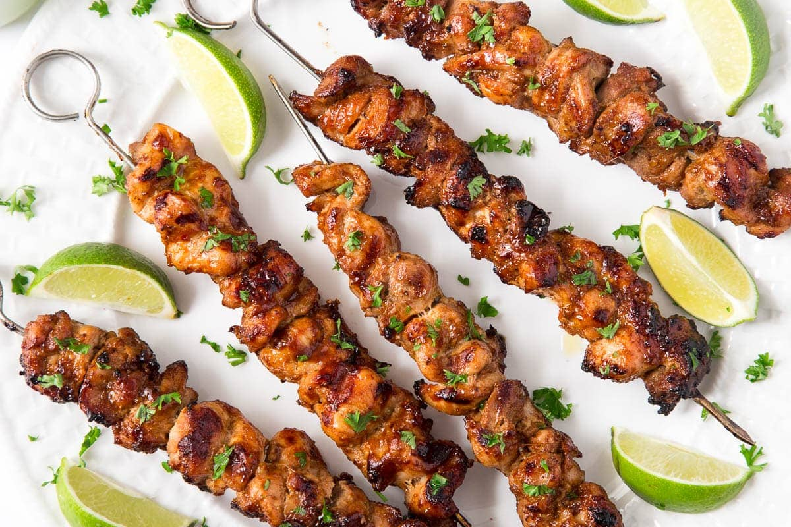

Chicken Skewers

The Perfect Finger Food for the Party, Barbecue, and Beyond
A popular dish with good reason! Easy to cook and even easier to eat.
The skewers produced are destined to be a hit at relaxed occasions of all descriptions
Ingredients
- Chicken breast
- Basil
- Honey
- Limes
Steps
- Remove 300g of the chicken breast from its packaging, slice into small pieces, and cook on a pan for approximately 15 minutes at medium heat, testing towards the end for perfection
- Prepare 3 tablespoons of honey as the chicken cooks and add it to the pan after 10 minutes, ensuring an even coating on each piece
- Skewer each chicken piece with your skewers once finished
- Chop both the limes and the basil and add generously to the finished skewers!